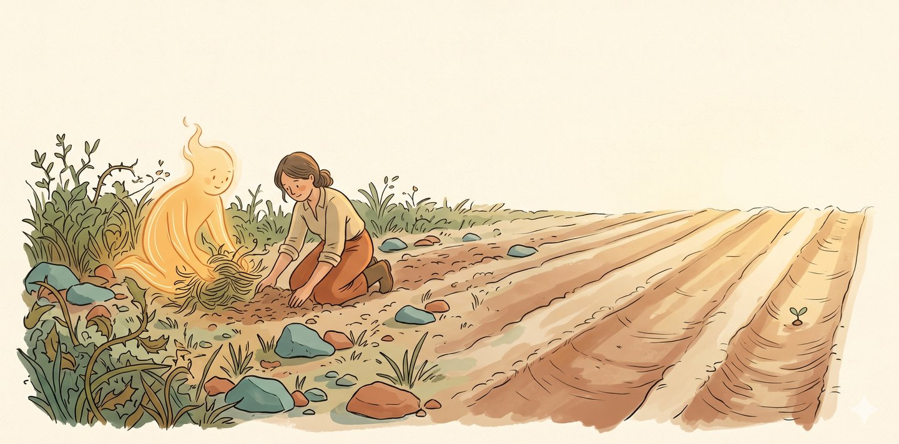
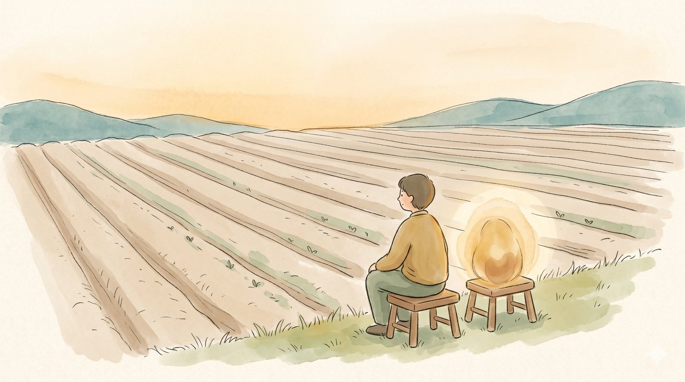

種東西之前,先整地。你心裡也是一塊地——做了好多、想了好多,卻雜草叢生、石頭沒清、畦還沒分。整地,是我陪你把這塊地整一整:把雜的理清、把埋著的翻上來、把散的分成畦——讓你看清自己有什麼,也好種下下一步。
這不是去看心理師,是來跟一個會整地的人,一起把你這塊地,理出一條線。

先不急著解決。我陪你看見——你心裡那塊地,現在到底長著什麼、那條真的線在哪裡。
把雜的理清、把埋著的翻上來、把散落的——做過的、會的、想的——分成一條條好走的畦。
地整好了,我們一起種下一個你真的走得出去、明天就能開始的下一步。
說清楚,是對你也對我的誠實。
先說清楚一件事:整地不是心理諮商,也不是沙遊治療——那些是受規範的臨床服務,我另外提供。整地是非臨床的「整合 × 啟發」對談,不做診斷、不做治療;我們理的是方向、整合與行動。如果你此刻需要的是治療,我會誠實告訴你,並陪你走對的那條路。
整地適合你,如果你心裡有一塊地,想有人陪你慢慢理清;
也適合你,如果你還說不上來,只想找個安靜的地方,坐下來看看。

我會親自看過你寫的,回信跟你約一個
能好好整地的時間。謝謝你願意走進來。
不想填表單?也可以直接 寫信 或加 LINE @sanplay。